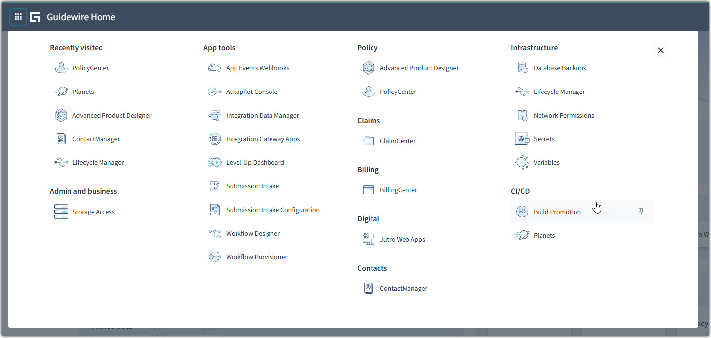
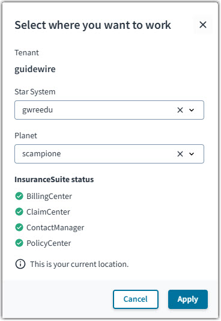
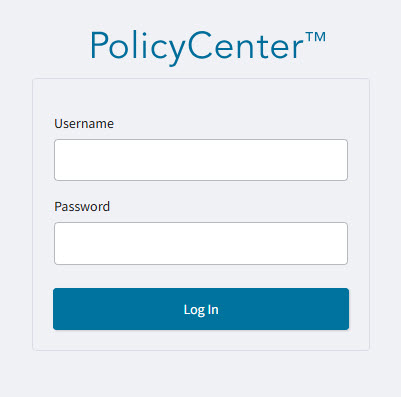
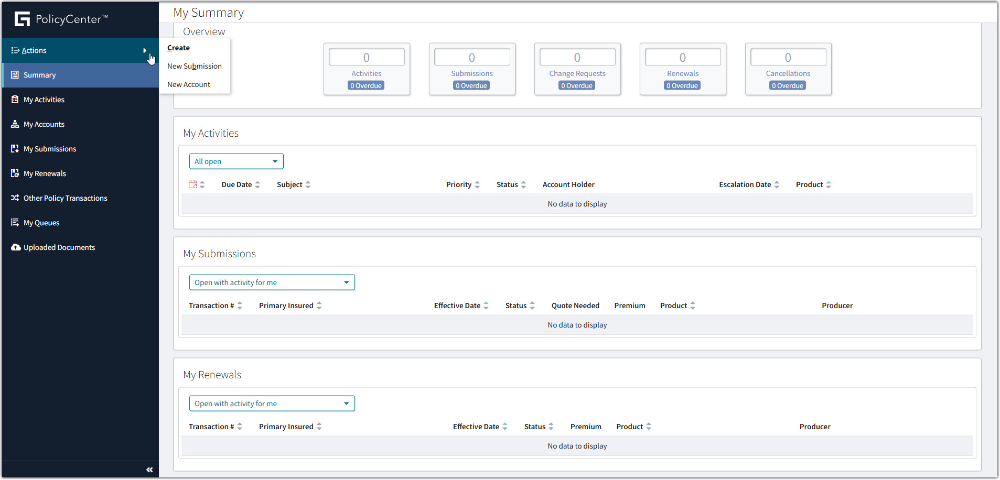
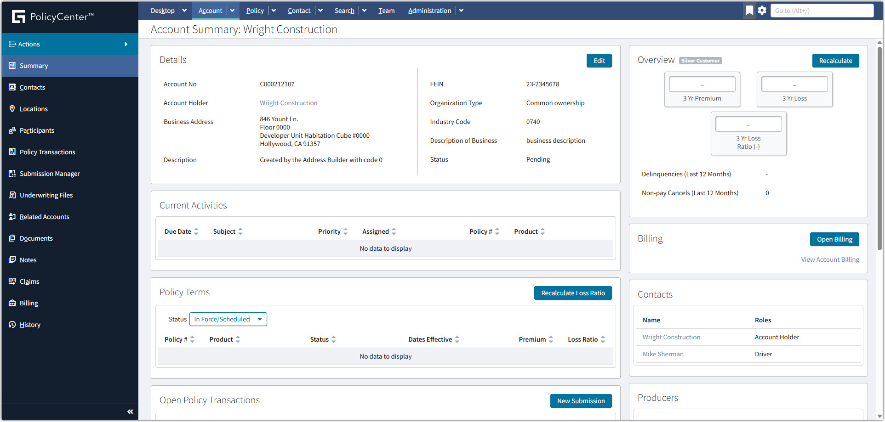
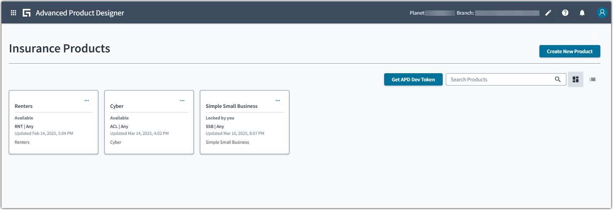
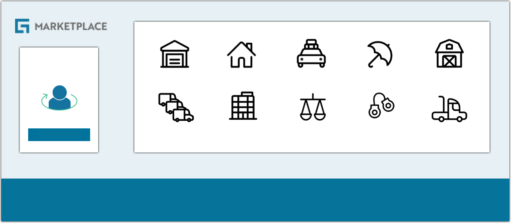
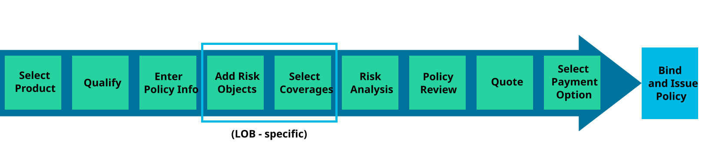
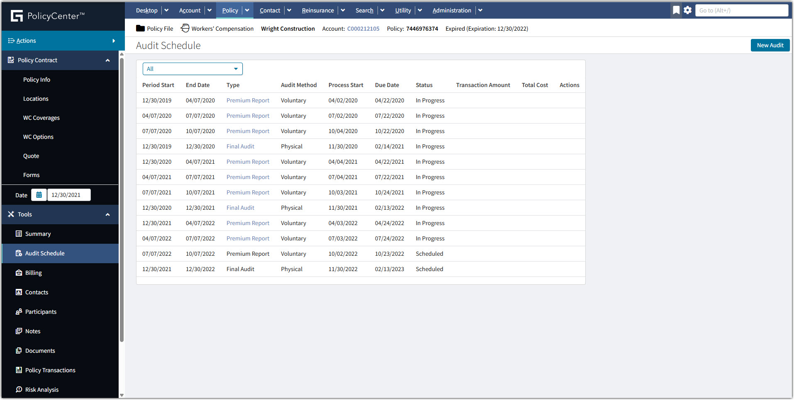

Bem-vindo ao PolicyCenter Overview
Visão geral dos principais recursos do Guidewire PolicyCenter™ e como seguradoras o utilizam para emitir apólices.
O que você vai aprender
Ao concluir este curso, você será capaz de:
- Identificar o PolicyCenter como um Sistema de Administração de Apólices (PAS)
- Descrever os principais recursos e a navegação da interface do PolicyCenter
- Descrever como buscar e adicionar uma Conta no PolicyCenter
-
Descrever como o PolicyCenter executa as seguintes transações:
- Criar nova proposta de apólice
- Realizar alteração de apólice
- Renovar uma apólice
- Cancelar uma apólice
- Reabilitar ou reescrever uma apólice
- Executar Auditorias de Prêmio
- Listar formas de se preparar para implementar o PolicyCenter
Sistemas de Administração de Apólices
O que é um PAS e como o PolicyCenter se posiciona nesse contexto.
O que é um PAS?
Sistemas de Administração de Apólices (PAS) são soluções de software abrangentes projetadas para gerenciar todo o ciclo de vida das apólices de seguro — desde a emissão e endossos até as renovações e cancelamentos.
Esses sistemas automatizam tarefas rotineiras, otimizam fluxos de trabalho e integram-se a outros sistemas essenciais como CRM, faturamento e sinistros, criando um ambiente operacional coeso.
PolicyCenter como PAS
O PolicyCenter® é um sistema líder de administração de apólices que permite às seguradoras lançar novos produtos rapidamente, adaptar-se às necessidades dos segurados e escalar com eficiência. Suporta o ciclo de vida completo de apólices de seguro pessoal e comercial — cotação, emissão, endosso e renovação.
Conta com motor de tarifação, business intelligence e integrações com fontes externas para análise de risco. Funciona como sistema independente ou como parte do Guidewire InsuranceSuite™, sendo compatível com implantações on-premises e em nuvem.
Capacidades-Chave do PolicyCenter
Por que implementar um PAS?
Acessando o PolicyCenter
Passo a passo para acessar o PolicyCenter pela primeira vez na plataforma Guidewire Cloud.
Como Acessar o PolicyCenter
Acesse a Guidewire Home, a página inicial da Guidewire Cloud Platform.
Abra o App Launcher na Guidewire Home e clique em PolicyCenter na seção Policy.

App Launcher — clique em PolicyCenter sob a categoria Policy
Na janela pop-up, selecione o Star System e o Planet onde deseja trabalhar e clique em Apply.

Selecione o ambiente (Star System + Planet) e confirme com Apply
Insira seu Username e Password e clique em Log In.

Tela de login do PolicyCenter™
Interface do PolicyCenter
Conheça as principais telas e elementos de navegação do PolicyCenter.
My Summary — Tela Inicial
Ao fazer login, o usuário vê o Desktop do PolicyCenter. À esquerda fica o painel de navegação; na área principal, o dashboard personalizado My Summary.

Tela inicial do PolicyCenter — clique para ampliar
Painel de Navegação
O painel lateral agrupa as principais áreas de trabalho do usuário:
Account Summary
Ao clicar em uma conta em My Accounts, a página Account Summary é exibida. Ela centraliza todas as informações relevantes sobre a conta:
- Dados do titular (Account Holder), endereço, FEIN e tipo de organização
- Atividades correntes e histórico de apólices (Policy Terms)
- Transações, sinistros, contas relacionadas, produtores e locais
- Seção de Billing com informações do BillingCenter (quando integrado)

Account Summary — clique para ampliar
Definindo e Configurando Produtos de Seguro
Como o PolicyCenter usa o Advanced Product Designer App e os GO Products para criar e lançar produtos de seguro.
O Papel do PolicyCenter na Definição de Produtos
O PolicyCenter suporta uma ampla gama de produtos de seguro pessoal e comercial, oferecendo às equipes de desenvolvimento de produto, atuariais e de subscrição grande flexibilidade para definir produtos para diferentes mercados, marcas e canais de venda.
Para isso, o PolicyCenter utiliza o Guidewire Advanced Product Designer App™ (APD App) — uma ferramenta low-code que permite configurar definições de produto, regras de negócio, telas, fluxos de trabalho e modelos de dados diretamente na aplicação, sem necessidade de programação avançada.
Advanced Product Designer App (APD App)
O APD App é uma ferramenta de negócio baseada em nuvem para criar e manter produtos de seguro. Com ele é possível:
- Projetar e construir produtos de seguro rapidamente, prontos para uso no PolicyCenter
- Facilitar discussões de negócio com todas as partes interessadas ainda nas fases iniciais do projeto

Interface do APD App — lista de produtos disponíveis (ex.: Renters, Cyber, Simple Small Business)
Durante a implementação do PolicyCenter, é essencial compreender as capacidades do APD App e do PolicyCenter Product Model para atender aos requisitos de produto. A Guidewire recomenda o uso da abordagem em três fases do APD para criar produtos únicos de forma estruturada.
Guidewire GO Products
Para acelerar a criação de produtos, o programa Guidewire GO oferece linhas de produto pré-configuradas com mind maps e templates XML que podem ser importados diretamente no APD App.
GO Products são coleções aprovadas pela Guidewire de conteúdo de produto pré-construído, disponíveis para download no Guidewire Marketplace. Permitem lançar produtos no InsuranceSuite e InsuranceNow mais rapidamente, com as melhores práticas da Guidewire já incorporadas. O conteúdo varia por produto ou linha de negócio, podendo incluir mind maps, conteúdo local, e mais.

Guidewire Marketplace — categorias de GO Products disponíveis (Habitação, Auto Pessoal, Auto Comercial, Propriedade Comercial, etc.)
Tipos de Transações
Visão geral das principais transações de apólice que o PolicyCenter é capaz de executar.
O PolicyCenter gerencia o ciclo de vida completo das apólices de seguro por meio de transações específicas. As próximas seções detalham cada uma delas:
Propostas de Apólice
A transação de proposta cria uma nova apólice — desde a qualificação do candidato até a emissão do contrato.
A proposta é a transação que inicia a criação de uma nova apólice no PolicyCenter. Ela permite qualificar candidatos, gerar cotações e vincular/emitir um novo contrato caso o solicitante aceite os termos. Uma proposta pode não resultar em apólice emitida — o candidato pode não se qualificar ou a cotação pode não ser aceita.
Fluxo de Proposta
O PolicyCenter usa um wizard de proposta para guiar o usuário na coleta das informações necessárias. As telas variam conforme o produto de seguro, mas o fluxo segue um conjunto comum de etapas.
Há duas modalidades disponíveis:
- Quick Quote — coleta o mínimo de informações necessário para gerar uma cotação.
- Full Application — coleta o conjunto completo de informações para uma cotação vinculável.

Fluxo completo de proposta — etapas 4 e 5 (Add Risk Objects / Select Coverages) variam por linha de negócio (LOB-specific)
Passo a Passo da Proposta
A proposta deve ser iniciada a partir de uma Conta usando o menu Actions. Com o wizard aberto, siga as etapas:
O diagrama acima mostra o fluxo completo em visão geral. Os passos abaixo detalham cada etapa do wizard de proposta dentro do PolicyCenter.
Selecionar o Produto — escolha o produto de seguro para a apólice.
Qualificar — responda às perguntas de pré-qualificação do candidato.
Informações da Apólice — insira os dados básicos da apólice.
Adicionar Bens Segurados — adicione os itens a serem protegidos pela apólice (veículo, imóvel etc.).
Selecionar Coberturas — escolha as coberturas e condições para cada bem segurado.
Análise de Risco — informe os detalhes de subscrição necessários para a análise de risco.
Revisão da Apólice — navegue até a tela de revisão para conferir o resumo completo.
Cotação — clique em Quote para gerar o prêmio calculado, formulários relacionados e opções de pagamento.
Opção de Pagamento — visualize e selecione as opções de pagamento e planos disponíveis.
Vincular e Emitir — se o cliente aceitar a cotação, vincule e emita a apólice.
Alterações de Apólice
Como o PolicyCenter gerencia mudanças materiais em apólices vigentes, reversões e cenários complexos de alteração.
O que é uma Alteração de Apólice?
A transação de alteração de apólice (policy change) é usada para fazer mudanças materiais em uma apólice antes da data de vencimento, geralmente resultando em alteração de prêmio. Uma apólice pode ser alterada para adicionar, remover ou modificar:
- Bens segurados (itens cobertos ou seguráveis) da apólice
- Coberturas associadas ao bem segurado
- Condições de cobertura que definem os termos de cada cobertura
- Condições e exclusões
Reversão de Alteração
Se uma alteração foi feita por engano, o PolicyCenter oferece a ação Reverse Policy Change — sem precisar reconstruir manualmente o estado anterior com uma nova alteração. Essa reversão se aplica apenas à última transação de alteração vinculada.
Ao concluir a reversão, o PolicyCenter desfaz automaticamente todas as mudanças nos elementos afetados (incluindo custo) com data retroativa à data efetiva original:
- Itens adicionados serão removidos
- Itens removidos serão restaurados
- Itens modificados voltarão ao estado original
Cenários Complexos de Alteração
O PolicyCenter também gerencia situações em que múltiplas alterações concorrentes são feitas na mesma apólice:
Ocorrem quando uma nova transação de alteração é iniciada antes que uma alteração anterior seja vinculada. Com duas transações não vinculadas, apenas uma pode ser efetivada. O PolicyCenter alerta o usuário e oferece duas opções: vincular a alteração anterior ou deixar a nova substituí-la (preempção).
Ocorrem quando uma nova alteração com data efetiva anterior é vinculada depois de uma alteração já vinculada. O PolicyCenter verifica conflitos (ex.: mesmo campo com valores diferentes) e exige que o usuário resolva cada um. Se não houver conflitos, as alterações anteriores são mescladas nas posteriores.
❌ Não podem: Submissões, Renovações e Auditorias.
Renovações de Apólice
A transação de renovação estende uma apólice para um novo período vigente, mantendo o mesmo número de apólice.
A renovação estende uma apólice para um novo período. O número da apólice não muda — um novo número de vigência é acrescentado ao final. Se não renovada, a apólice expira ao término da vigência.
Por padrão, o PolicyCenter usa um fluxo automatizado, configurável para iniciar "X" dias antes do término da vigência. Há também outras opções:
Opções de Renovação
Permite iniciar o processo de renovação antes do fluxo automático — útil para editar a apólice renovada (ex.: remover descontos ou alterar o prazo do novo período).
Renovações de curto prazo: uma seguradora pode precisar renovar por um período reduzido para cumprir leis jurisdicionais que exigem aviso prévio antes de cancelamento.
É possível definir uma direção antes do início do fluxo de renovação para que a apólice seja:
- Encaminhada (Referred) — enviada para revisão por Atendimento ao Cliente ou Subscrição
- Não renovada (Non-renewed) — quando a seguradora opta por não renovar por ser financeiramente desfavorável; a cobertura termina na data de expiração
- Não aceita (Not taken) — quando o segurado opta por não renovar, geralmente por ter encontrado uma apólice mais barata em outra seguradora
Cancelamentos de Apólice
Cancelamento, reabilitação e reescrição — as três formas de encerrar ou restaurar uma apólice no PolicyCenter.
O que é um Cancelamento?
A transação de cancelamento encerra prematuramente o contrato antes do término de vigência e do processo de renovação. Pode ser iniciada por:
- Pelo segurado — encontrou preço melhor em outra seguradora ou não possui mais o bem segurado
- Pela seguradora — prêmio em atraso, fraude detectada ou outros motivos contratuais
Reabilitação de Apólice Cancelada
A reabilitação (Policy Reinstatement) "descancela" a apólice, restaurando-a ao estado anterior ao cancelamento. A configuração base do Guidewire define a reabilitação exatamente como isso — reverter a transação de cancelamento.
- A data de reintegração deve ser igual à data efetiva do cancelamento, evitando qualquer lacuna de cobertura
- É feita quando a causa do cancelamento foi resolvida — por exemplo, o segurado quitou o prêmio em atraso
Reescrição de Apólice Cancelada
A reescrição (Policy Rewrite) cria uma nova apólice a partir de uma existente — com novas datas e condições. É usada para corrigir erros significativos ou fazer mudanças que não são permitidas em uma transação de alteração, como:
- Alterar o produtor responsável
- Alterar o número da apólice
- Alterar datas de vigência ou vencimento
- Transferir a apólice para outra conta
Auditorias de Prêmio
Transações de auditoria usadas para ajustar prêmios estimados com base nos valores reais ao longo ou ao fim da vigência.
As Auditorias de Prêmio são usadas principalmente nas linhas de Workers' Compensation e General Liability, onde o prêmio é baseado em valores estimados (ex.: folha de pagamento dos segurados). Como esses valores variam ao longo da vigência, relatórios periódicos são necessários para converter estimativas em valores reais e ajustar o prêmio da apólice.
Outras linhas de negócio, não baseadas em estimativas, também podem ser submetidas a uma Auditoria Final ao término da vigência, se os valores mudaram.
Agenda de Auditorias no PolicyCenter
Ao emitir uma apólice com auditorias de prêmio, o PolicyCenter adiciona automaticamente auditorias programadas à apólice. Elas podem ser visualizadas pelo link Audit Schedule no arquivo da apólice.
Trata-se de uma lista antecipada de auditorias ainda não inicializadas — com status Scheduled — ordenadas por data de início e término. Cada item inclui: Data de Início, Data de Término, Método de Auditoria e Data de Vencimento. Usuários com permissão adequada podem editar esses registros antes que a auditoria seja inicializada.

Audit Schedule — lista de Premium Reports e Final Audits programados para uma apólice de Workers' Compensation
Implementações do PolicyCenter
Como se preparar para implementar o PolicyCenter — levantamento de requisitos de negócio e alinhamento de equipes.
Antes de implementar o PolicyCenter, levante informações detalhadas sobre os processos atuais de administração de apólices da sua organização. Isso ajudará a alinhar os fluxos de trabalho com os processos padrão do PolicyCenter e a definir o escopo, o cronograma e os pontos de integração. Uma preparação cuidadosa garante uma implementação mais fluida e melhor alinhamento com os objetivos de negócio.
Levantamento de Requisitos de Negócio
Seis áreas críticas para explorar antes da implementação:
Identifique quais produtos e linhas de negócio serão gerenciados no PolicyCenter, sua estrutura e projeções de volume.
- Quais produtos sua empresa comercializa? Quais linhas de negócio estão incluídas?
- Qual o volume de apólices por produto e linha? Qual a projeção para os próximos 5 anos?
- Há produtos empacotados de formas diferentes para mercados ou segmentos distintos?
- Quantas seguradoras você possui hoje? Quantas pretende implementar no PolicyCenter?
Determine quais transações (propostas, alterações, renovações, cancelamentos, reescrições, reabilitações, auditorias) serão gerenciadas no PolicyCenter e como interagirão com sistemas existentes.
- Alguma transação será iniciada em outro sistema mas gerenciada no PolicyCenter?
- Você realiza verificação de nome/reserva de risco hoje? Como isso é feito?
- Quais regras de avaliação de risco são usadas para triagem de novas propostas?
- Informações de produtor ou agente fazem parte do processo de proposta?
Planeje os critérios de cotação e tarifação, incluindo se cotações alternativas ou ajustes manuais de prêmio serão permitidos.
- Você oferece "quick quotes" com informações mínimas no início do processo de vendas?
- Vai manter a solução de tarifação atual ou implementar uma nova?
- Permite ajuste manual de prêmio (override)? Para quais linhas de negócio?
Mapeie a estrutura interna, responsabilidades dos funcionários e requisitos de produtores e usuários externos que interagirão com o PolicyCenter.
- Como a empresa está organizada? Quantas unidades existem (matriz, regionais, call centers)?
- Que tipos de equipes estão em cada unidade? Quais são suas responsabilidades?
- Em quantos estados a empresa emite apólices? Qual a distribuição por linha de negócio?
- Qual o perfil dos produtores (agentes diretos, cativos, independentes, corretores)?
- Os produtores acessam sistemas internos atualmente? Qual o nível de autoridade deles?
Considere as soluções atuais e futuras para emissão de formulários e integração com o sistema de faturamento.
- Vai manter a solução atual de emissão de formulários ou implementar uma nova?
- Que dados o sistema de faturamento precisa receber do sistema de apólices?
- Quais são os pontos de integração previstos entre PolicyCenter e o sistema de faturamento?
Defina como as informações de conta e contato serão gerenciadas.
- Como as informações de conta e contato são gerenciadas no ambiente atual?
- O PolicyCenter e/ou ContactCenter será o sistema de registro para contas e contatos?
Prepare sua Equipe
A Guidewire recomenda que as organizações dediquem 30 a 45 dias à preparação antes do lançamento do projeto — reunindo informações e tomando decisões críticas. O Guidewire Education apoia essa fase com programas estruturados de capacitação e certificação que familiarizam as equipes de projeto com a funcionalidade, configuração e integração das aplicações Guidewire.
- PolicyCenter Business Analyst
- PolicyCenter Configuration Developer
Resumo do Curso
Você concluiu o conteúdo do PolicyCenter Overview. Revise os pontos principais antes de avançar.
O que você aprendeu
O PolicyCenter é um sistema líder de administração de apólices (PAS) capaz de gerenciar o ciclo de vida completo das apólices de seguro — automatizando tarefas, otimizando fluxos de trabalho e integrando-se a outros sistemas para melhorar a eficiência e a experiência do cliente.
- O PolicyCenter gerencia o ciclo de vida completo das apólices por meio de transações manuais e automatizadas: propostas, alterações, renovações, cancelamentos, reabilitações e reescrições.
- O PolicyCenter utiliza o Guidewire Advanced Product Designer App™ — uma ferramenta low-code — para projetar, desenvolver e configurar produtos de seguro.
- Antes de implementar o PolicyCenter, as seguradoras devem levantar informações abrangentes sobre seus processos de administração de apólices, produtos, emissão de formulários, critérios de tarifação, faturamento, estrutura organizacional e requisitos de produtores.
Próximos Passos
Dependendo do seu papel, aprofunde seus conhecimentos com os seguintes treinamentos Guidewire:
PolicyCenter Functional Requirements
Advanced Product Designer App